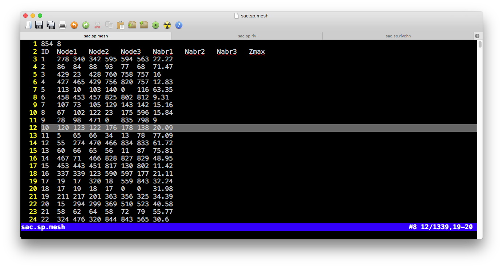
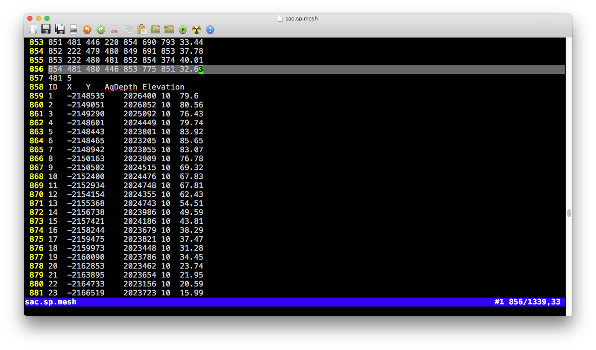

Chapter 3 Input files
List of input files:
| File | Category | Comments | Header | # of column |
|---|---|---|---|---|
| .mesh | sp | Domain element (triangular mesh) | Yes | |
| .att | sp | Attribute table of triangular elements | Yes | |
| .riv | sp | Rivers | Yes | |
| .rivchn | sp | Topologic relation b/w River and Element | Yes | |
| .calib | cfg | Calibration on physical parameters | Yes | |
| .para | cfg | Parameters of the model configurature | Yes | |
| .ic | cfg | Intial conditions | Yes | |
| .geol | para | Physical parameters for Geology layers | Yes | |
| .soil | para | Physical parameters for Soil layers | Yes | |
| .lc | para | Physical parameters for Land cover layers | Yes | |
| .forc | tsd | List of files to the Time-series forcing data | Yes | |
| .csv | tsd | Time-series forcing data | Yes | |
| .lai | tsd | Time-series LAI data | Yes | |
| .obs | tsd | Time-series observational data for calibration purpose only | Yes | |
| .mf | tsd | Time-series Melt Factor data | Yes | |
| .rl | tsd | Time-series Roughness Length data | Yes | |
| gis/domain | Shapefile | Shapefile of .mesh file | x | x |
| gis/river | Shapefile | Shapefile of .riv file | x | x |
| gis/seg | Shapefile | Shapefile of .rivchn file | x | x |

The screenshot of input files for SHUD
The files in folder gis and fig are not involved in SHUD modeling, but they are very useful for your data pre- and post-processing.
3.1 Spatial data
3.1.1 .sp.mesh file
  There are two tables in the .mesh file, the one is a table of elements and the other is a table of nodes of elements.
Block 1 (Element information)
Pre-table
| Value1 | Value2 |
|---|---|
| Number of rows ( \(N_{element}\)) | Number of columns (\(8\)) |
- Table
| Colname | Meaning | Range | Unit | Comments |
|---|---|---|---|---|
| ID | Index of element \(i\) | 1 ~ \(N_{element}\) | - | |
| Node1 | Node 1 of element \(i\) | 1 ~ \(N_{node}\) | - | |
| Node2 | Node 2 of element \(i\) | 1 ~ \(N_{node}\) | - | |
| Node3 | Node 3 of element \(i\) | 1 ~ \(N_{node}\) | - | |
| Nabr1 | Index of Neighbor 1 of element \(i\) | 1 ~ \(N_{element}\) | - | |
| Nabr2 | Index of Neighbor 2 of element \(i\) | 1 ~ \(N_{element}\) | - | |
| Nabr3 | Index of Neighbor 3 of element \(i\) | 1 ~ \(N_{element}\) | - | |
| Zmax | Surface elevation of element \(i\) | -9999 ~ +inf | \(m\) |
Block 2 (node information)
Pre-table:
| Value1 | Value2 |
|---|---|
| Number of rows ( \(N_{node}\)) | Number of columns (\(5\)) |
- Table
| Colname | Meaning | Range | Unit | Comments |
|---|---|---|---|---|
| ID | Index of node \(i\) | 1 ~ \(N_{element}\) | - | |
| X | X coordinate of node \(i\) | 1 ~ \(N_{node}\) | - | |
| Y | Y coordinate of node \(i\) | 1 ~ \(N_{node}\) | - | |
| AqDepth | Thickness of aquifer \(i\) | 0 ~ +inf | \(m\) | |
| Elevation | Surface elevation of node \(i\) | -9999 ~ +inf | \(m\) |
3.1.2 .sp.att file
Example of .sp.att file
- Pre-table
| Value1 | Value2 |
|---|---|
| Number of rows ( \(N_{element}\)) | Number of columns (\(7\)) |
- Table
| Colname | Meaning | Range | Unit | Comments |
|---|---|---|---|---|
| ID | Index of element \(i\) | 1 ~ \(N_{element}\) | - | |
| SOIL | Index of soil type | 1 ~ \(N_{soil}\) | - | |
| GEOL | Index of geology type | 1 ~ \(N_{geol}\) | - | |
| LC | Index of land cover type | 1 ~ \(N_{lc}\) | - | \(N_{lc}\) = \(N_{lai}\) |
| FORC | Index of forcing site | 1 ~ \(N_{forc}\) | - | |
| MF | Index of melt factor | 1 ~ \(N_{mf}\) | - | |
| BC | Index of boundary condition | 1 ~ \(N_{bc}\) | - |
3.1.3 .sp.riv file
Example of .sp.riv file
- Pre-table
| Value1 | Value2 |
|---|---|
| Number of rows ( \(N_{riv}\)) | Number of columns (\(5\)) |
- Table
| Colname | Meaning | Range | Unit | Comments |
|---|---|---|---|---|
| ID | Index of river \(i\) | 1 ~ \(N_{river}\) | - | |
| DOWN | Index of downstream river | 1 ~ \(N_{river}\) | - | Negative vlaue indicates outlet |
| Type | Index of river parameters | 1 ~ \(N_{rivertype}\) | - | |
| Slope | Slope of river bed | -10 ~ 10 | \(m/m\) | Height/Length |
| Length | Length of the river \(i\) | 0 ~ inf | \(m\) |
3.1.4 .sp.rivseg file
Example of .sp.rivseg file
- Pre-table
| Value1 | Value2 |
|---|---|
| Number of rows ( \(N_{segment}\)) | Number of columns (\(4\)) |
- Table
| Colname | Meaning | Range | Unit | Comments |
|---|---|---|---|---|
| ID | Index of segments \(i\) | 1 ~ \(N_{segment}\) | - | |
| iRiv | Index of river | 1 ~ \(N_{river}\) | - | |
| iEle | Index of element | 1 ~ \(N_{element}\) | - | |
| Length | Length of the segments \(i\) | 0 ~ inf | \(m\) |
3.2 Model configuration files
3.2.1 .cfg.para file
Example of .cfg.para file
- Table
| Colname | Meaning | Range | Unit | Comments |
|---|---|---|---|---|
| VERBOSE | Verbose mode | - | - | |
| DEBUG | Debug mode | - | - | |
| INIT_MODE | Initial condition mode | 1,2,3 | - | 1=Dry condition, 2=Relief conditon, 3=Warm start |
| ASCII_OUTPUT | ASCII ouput | 1/0 | - | |
| Binary_OUTPUT | Binary output | 1/0 | - | |
| NUM_OPENMP | Number of threads for OpenMP | 0 ~ \(N_{threads}\) | - | |
| ABSTOL | Abosolute tolerance for CVODE solver | 1e-6 ~ 0.1 | - | |
| RELTOL | Relative tolerance for CVODE solver | 1e-6 ~ 0.1 | - | |
| INIT_SOLVER_STEP | Initial time step for CVODE solver | ? | - | |
| MAX_SOLVER_STEP | Maximum time step for CVODE solver | ? | - | |
| ET_STEP | Time step of Evapotranspiration | 1~360 | \(min\) | |
| START | Start Time | 0 ~ inf | \(day\) | |
| END | End Time | - | \(day\) | |
| dt_ye_snow | Time step of output snow storage | 0 ~ inf | \(min\) | |
| dt_ye_surf | Time step of output surface storage | 0 ~ inf | \(min\) | |
| dt_ye_unsat | Time step of output unsaturated storage | 0 ~ inf | \(min\) | |
| dt_ye_gw | Time step of output groundwater head | 0 ~ inf | \(min\) | |
| dt_Qe_surf | Time step of output surface element flux | 0 ~ inf | \(min\) | |
| dt_Qe_sub | Time step of output subsurface element flux | 0 ~ inf | \(min\) | |
| dt_qe_et0 | Time step of output element flux, interception | 0 ~ inf | \(min\) | |
| dt_qe_et1 | Time step of output element flux, transpiration | 0 ~ inf | \(min\) | |
| dt_qe_et2 | Time step of output element flux, evaporation | 0 ~ inf | \(min\) | |
| dt_qe_etp | Time step of output element flux, potential ET | 0 ~ inf | \(min\) | |
| dt_qe_prcp | Time step of output element flux, interception | 0 ~ inf | \(min\) | |
| dt_qe_infil | Time step of output element flux, interception | 0 ~ inf | \(min\) | |
| dt_qe_rech | Time step of output element flux, interception | 0 ~ inf | \(min\) | |
| dt_yr_stage | Time step of output river stage | 0 ~ inf | \(min\) | |
| dt_Qr_down | Time step of output river flux, downstream | 0 ~ inf | \(min\) | |
| dt_Qr_surf | Time step of output river flux, surface flow | 0 ~ inf | \(min\) | |
| dt_Qr_sub | Time step of output river flux, base flow | 0 ~ inf | \(min\) | |
| dt_Qr_up | Time step of output river flux, upstream | 0 ~ inf | \(min\) |
3.2.2 .cfg.calib file
Example of .cfg.calib file
- Table
| Colname | Meaning | Range | Unit | Comments |
|---|---|---|---|---|
| GEOL_KSATH | Horizontal conductivity of ground water | ? | - | |
| GEOL_KSATV | Vertical conductivity of ground water | ? | - | |
| GEOL_KMACSATH | Horizontal conductivity of macropore | ? | - | |
| GEOL_DMAC | Macropore depth | - | ||
| GEOL_THETAS | Porosity, saturated soil moisture | - | ||
| GEOL_THETAR | Residual soil moisture | - | ||
| GEOL_MACVF | Vertical macropore areal fraction | - | ||
| SOIL_KINF | Vertical conductivity of top soil | ? | - | |
| SOIL_KMACSATV | Vertical conductivity of soil macropore | ? | - | |
| SOIL_DINF | Infiltration depth | ? | - | |
| SOIL_DROOT | Root depth | - | ||
| SOIL_ALPHA | \(\alpha\) value in van Genuchten equation | - | ||
| SOIL_BETA | \(\beta\) value in van Genuchten equation | - | ||
| SOIL_MACHF | Horizontal macropore areal fraction | - | ||
| LC_VEGFRAC | Vegetation fraction | - | ||
| LC_ALBEDO | Emissitive reflection ratio | - | ||
| LC_ROUGH | Manning’s roughness of element surface | - | ||
| LC_SOILDGD | Soil degradation | - | ||
| LC_IMPAF | Impervious areal fraction | - | ||
| LC_ISMAX | Maximum interception | - | ||
| AQ_DEPTH+ | Thichness of aquifer | \(m\) | ||
| TS_PRCP | Precipitation | - | ||
| TS_SFCTMP+ | Temperature | \(C\) | ||
| ET_ETP | Transpiration | - | ||
| ET_IC | Interception | - | ||
| ET_TR | Evaporation | - | ||
| ET_SOIL | Evaporation | - | ||
| RIV_ROUGH | Manning’s roughness of river | - | ||
| RIV_KH | Conductivity of river bed | - | ||
| RIV_DPTH+ | Depth of river cross section | \(m\) | ||
| RIV_WDTH+ | Width of river cross section | \(m\) | ||
| RIV_SINU | Sinuosity of river path | - | ||
| RIV_CWR | \(C_{wr}\) in Chezy equation | - | ||
| RIV_BSLOPE+ | Slope of river bed | \(m/m\) | ||
| IC_GW+ | Initial condition of groundwater | \(m\) | ||
| IC_RIV+ | Initial condition of river stage | \(m\) |
3.2.3 .cfg.ic file
Example of .cfg.ic file
Block 1 (Element initial condition)
Pre-table
| Value1 | Value2 |
|---|---|
| Number of rows ( \(N_{element}\)) | Number of columns (\(6\)) |
- Table
| Colname | Meaning | Range | Unit | Comments |
|---|---|---|---|---|
| ID | Index of element \(i\) | 1 ~ \(N_{element}\) | - | |
| Canopy | Canopy storage of element \(i\) | 0 ~ inf | \(m\) | |
| Snow | Snow storage of element \(i\) | 0 ~ inf | \(m\) | |
| Surface | Surface storage of element \(i\) | 0 ~ inf | \(m\) | |
| Unsat | Unsaturated storage of element \(i\) | 0 ~ inf | \(m\) | |
| GW | Groundwater head of element \(i\) | 0 ~ inf | \(m\) |
Block 2 (river initial condition)
Pre-table:
| Value1 | Value2 |
|---|---|
| Number of rows ( \(N_{riv}\)) | Number of columns (\(2\)) |
- Table
| Colname | Meaning | Range | Unit | Comments |
|---|---|---|---|---|
| ID | Index of river \(i\) | 1 ~ \(N_{riv}\) | - | |
| Stage | Stage of river \(i\) | 0 ~ inf | \(m\) |
3.3 Time-series data
3.3.1 .tsd.forc file
Example of .tsd.forc file
- Line 1:
Number of forcing sites | Start day (YYYYMMDD) - Line 2: Directory to the spreadsheet
- Line 3~N: Filenames of spreadsheet
Example of .csv forcing file
- Pre-table:
| Value1 | Value2 |
|---|---|
| ( \(0\)) | Number of columns (\(6\)) |
- Table
| Colname | Meaning | Range | Unit | Comments |
|---|---|---|---|---|
| Day | Time | 0 ~ \(N_{day}\) | \(day\) | |
| PRCP | Precipitation | 0 ~ 1 | \(m/day\) | |
| TEMP | Temperature | -100 ~ 70 | \(C\) | |
| RH | Relative Humidity | 0 ~ 1 | \(-\) | |
| wind | Wind Speed | 0 ~ inf | \(m/day\) | |
| Rn | Solar (shortwave) radiation | ? | \(J/day/m^2\) |
3.3.2 .tsd.lai file
Example of .tsd.lai file
- Pre-table:
| Value1 | Value2 | Value3 |
|---|---|---|
| Number of day ( \(N_{time}\)) | Number of columns (\(N_{lc}\)) | Start day (YYYYMMDD) |
- Table
| Colname | Meaning | Range | Unit | Comments |
|---|---|---|---|---|
| TIME | Time | 0 ~ \(N_{time}\) | \(day\) | |
| Column 2 | LAI of land cover 1 | 0 ~ inf | \(m^2/m^2\) | |
| Column i | LAI of land cover \(i-1\) | 0 ~ inf | \(m^2/m^2\) | |
| … | … | … | … |
3.3.3 .tsd.rl file
Example of .tsd.rl file
- Pre-table:
| Value1 | Value2 | Value3 |
|---|---|---|
| Number of day ( \(N_{time}\)) | Number of columns (\(N_{lc}\)) | Start day (YYYYMMDD) |
- Table
| Colname | Meaning | Range | Unit | Comments |
|---|---|---|---|---|
| TIME | Time | 0 ~ \(N_{time}\) | \(day\) | |
| Column 2 | Roughness length of land cover 1 | 0 ~ inf | \(m\) | |
| Column i | Roughness length of land cover \(i-1\) | 0 ~ inf | \(m\) | |
| … | … | … | … |
3.3.4 .tsd.mf file
Example of .tsd.mf file
- Pre-table:
| Value1 | Value2 | Value3 |
|---|---|---|
| Number of day ( \(N_{time}\)) | Number of columns (\(N_{mf}\)) | Start day (YYYYMMDD) |
- Table
| Colname | Meaning | Range | Unit | Comments |
|---|---|---|---|---|
| TIME | Time | 0 ~ \(N_{time}\) | \(day\) | |
| Column 2 | Melt factor 1 | 0 ~ inf | - | |
| Column i | Melt factor \(i-1\) | 0 ~ inf | - | |
| … | … | … | … |
3.3.5 .tsd.obs file
Example of .tsd.obs file
- Pre-table:
| Value1 | Value2 | Value3 |
|---|---|---|
| Number of day ( \(N_{time}\)) | Number of columns (\(N_{obs}\)) | Start day (YYYYMMDD) |
- Table
| Colname | Meaning | Range | Unit | Comments |
|---|---|---|---|---|
| TIME | Time | 0 ~ \(N_{time}\) | \(day\) | |
| Column 2 | Observational data 1 | ? | ? | |
| Column i | Observational data \(i-1\) | ? | ? | |
| … | … | … | … |